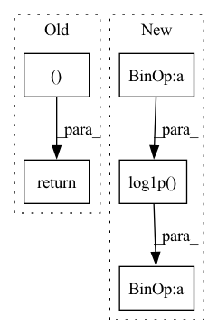

Pattern ID :3173
Before Change
// special case when there is no privacy
if np.isnan(eps).all():
return np.inf, np.nan
idx_opt = np.nanargmin(eps) // Ignore NaNs
return eps[idx_opt], orders_vec[idx_opt]
After Change
// This bound is not numerically stable as alpha->1.
// Thus we have a min value of alpha.
// The bound is also not useful for small alpha, so doesn"t matter.
eps = r + math.log1p( -1 / a) - math.log(delta * a) / (a - 1)
else:
// In this case we can"t do anything. E.g., asking for delta = 0.
eps = np.infIn pattern: SUPERPATTERN
Frequency: 3
Non-data size: 5
Instances Fragment ID: 12137086
Project Name: lxuechen/private-transformers
Commit Name: 32eb9bf1eef9c6637f47014c2e5633be7a04f810
Time: 2022-07-12
Author: lxuechen@gmail.com
File Name: private_transformers/accounting/rdp_accounting.py
M Class Name: AnonimousClass
N Class Name: AnonimousClass
M Method Name: get_privacy_spent(3)
N Method Name: get_privacy_spent(3)
M Parent Class:
N Parent Class:
M File Name: private_transformers/accounting/rdp_accounting.py
N File Name: private_transformers/accounting/rdp_accounting.py
M Start Line: 273
M End Line: 307
N Start Line: 272
N End Line: 318
Before Change
x += fuzz
x /= (1 + 2 * fuzz)
return np.log(x) - np.log(1 - x), -np.log(np.abs(x - x ** 2))
def sigmoid(x, fuzz=1e-2):
After Change
log_j = -np.log(x) - np.log1p(-x)
if fuzz:
log_j -= np.log(1 + 2 * fuzz)
return np.log(x) - np.log1p(-x ) , log_j
def sigmoid(x, fuzz=1e-12): Fragment ID: 12137102
Project Name: mj-will/nessai
Commit Name: efd0febbb8dabbe6855b918f21169437664f3acc
Time: 2021-08-23
Author: m.williams.4@research.gla.ac.uk
File Name: nessai/utils/rescaling.py
M Class Name: AnonimousClass
N Class Name: AnonimousClass
M Method Name: logit(2)
N Method Name: logit(2)
M Parent Class:
N Parent Class:
M File Name: nessai/utils/rescaling.py
N File Name: nessai/utils/rescaling.py
M Start Line: 284
M End Line: 286
N Start Line: 292
N End Line: 298
Before Change
log_J = np.log(np.abs(x - x ** 2))
x *= (1 + 2 * fuzz)
x -= fuzz
return x, log_J
rescaling_functions = {"logit": (logit, sigmoid)}
After Change
Log Jacobian determinant.
x = np.divide(1, 1 + np.exp(-x))
log_j = np.log(x) + np.log1p(-x )
if fuzz:
x *= (1 + 2 * fuzz)
x -= fuzz
log_j += np.log(1 + 2 * fuzz) Fragment ID: 12137105
Project Name: mj-will/nessai
Commit Name: efd0febbb8dabbe6855b918f21169437664f3acc
Time: 2021-08-23
Author: m.williams.4@research.gla.ac.uk
File Name: nessai/utils/rescaling.py
M Class Name: AnonimousClass
N Class Name: AnonimousClass
M Method Name: sigmoid(2)
N Method Name: sigmoid(2)
M Parent Class:
N Parent Class:
M File Name: nessai/utils/rescaling.py
N File Name: nessai/utils/rescaling.py
M Start Line: 300
M End Line: 305
N Start Line: 320
N End Line: 326